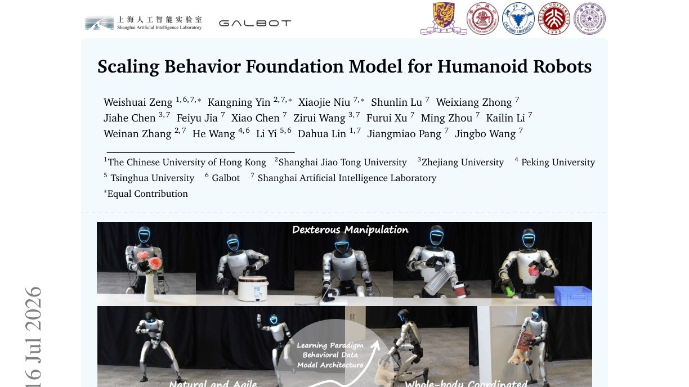
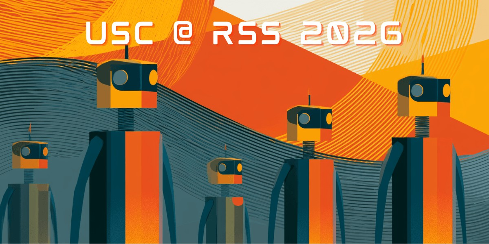
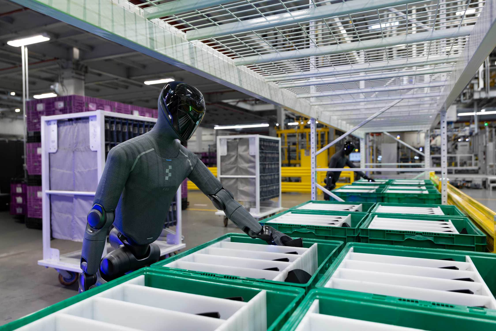
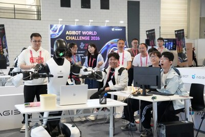
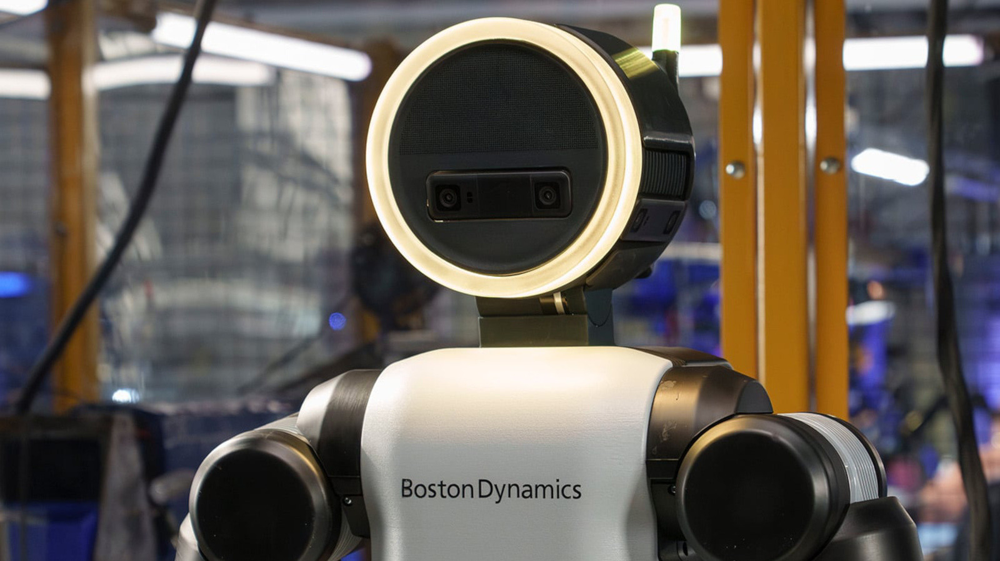
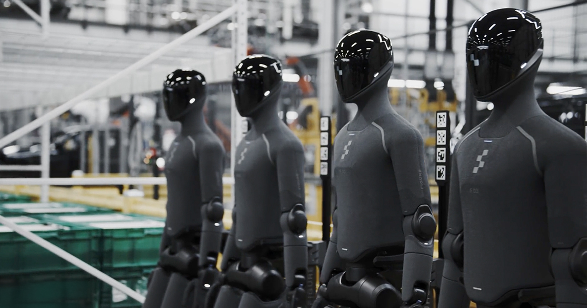

人形脉冲
本周信号很清楚：标准与实训把“规模化”从口号落成制度抓手，海外则用产线试点与顶会论文回答“能不能干活”。产量叙事升温之际，更值得盯的是可复现部署与全生命周期治理，而非舞台动作。

国内政策
工信部标委会“标准周”：规模化前夜先立车道
7月15日至17日，工信部人形机器人与具身智能标准化技术委员会2026年度全体会议暨“标准周”在浙江绍兴上虞举行。部领导强调产业已从技术探索进入规范化、规模化关键阶段，标准重在落地与普及，并需同步筑牢安全底座。会上成立WG7数据工作组，编辑判断：数据与安全标准将成为后续批产、联调与出口合规的硬约束，而不只是“加分项”。
人民网
两部门启动人形机器人与具身智能实景实训专项行动
工信部、国务院国资委联合开展2026年度实景实训专项行动（官方页面可核；通稿与地方跟进多见于6月上旬）。通知要求面向工业、特种、服务等场景打造实景实训空间、组建创新应用联合体，目标年底前完成一批常态部署并凝练百个以上高价值场景。编辑观点：这是把“能演示”推向“能作业”的国家级抓手，后续看各省报送计划与央企场景开放清单是否兑现。
工信部
工信部释放产量信号：全年整机有望突破十万台
7月7日，工信部科技司副司长甘小斌在WAIC 2026新闻发布会上表示，今年人形机器人全年整机产量有望突破10万台，并点名推进“模数共振”“人形机器人与具身智能实景实训”等专项。新华社稿件发布于7月8日。编辑判断：十万台是产能与信心指标，真正考验仍在良率、售后与场景复购；政策口径本身已足够影响资本市场与地方招商节奏。
新华社
WAIC 周开幕前夕：人工智能发展与治理进入高层议程
新华社7月14日电称，2026世界人工智能大会暨人工智能全球治理高级别会议将于7月17日至20日在上海举行，习近平主席将出席开幕式并发表主旨讲话。通稿同时援引产业数据称今年人形机器人整机产量有望突破10万台。编辑观点：治理叙事与产业放量同周登场，意味着安全、伦理与国际规则讨论将与产线交付并行，而不是“先做大再谈规矩”。
新华社
国外前沿
arXiv：Scaling Behavior Foundation Model 为人形控制给出缩放配方
论文于2026年7月16日提交（arXiv:2607.15163），提出协调运动跟踪范式、on-policy rollout 与参考动作多样性，以及 Humanoid Transformer 架构，以缩放 Behavior Foundation Model。作者报告测试集 MPKPE 在 local/global 模式下较既有控制器分别下降逾10%与82%，并声称含真机部署验证。编辑判断：关键不在单点指标，而在是否形成可复现的“数据—架构—部署”配方；需等待独立复现与开源代码。
arXiv

RSS 2026：Ψ0 用人视频预训练冲击人形 loco-manipulation
USC 于7月15日发布稿件，介绍其在 RSS 2026（7月13–17日，悉尼）上的三篇论文，其中 Ψ0 以约800小时人类视频预训练、再用约30小时机器人数据后训练，面向通用人形 loco-manipulation。预印本见 arXiv:2603.12263（2026年3月）。编辑观点：本周价值在于顶会舞台把“少机器人数据、多人类视频”路线推到主舞台；是否跨本体泛化，仍看后续公开评测与真机长程任务。
USC Viterbi


本期主条
BMW × Figure 03：斯巴坦堡物流排序进入产线试点
宝马官方新闻稿称，继 Figure 02 在斯巴坦堡车身车间支持逾3万台 X3 生产后，Figure 03 将承接物流排序：从散装料箱拣选零件并放入排序台车，再由自动牵引/转运系统送达工位。新机型强调软性安全构件、无线充电、语音交互与带触觉/掌部相机的手部。编辑判断：这是目前最可核验的第三方人形产线路径之一——任务刻意选择重复、高工效损耗的物流，而非炫技装配；后续应盯可用率与节拍，而非新闻稿形容词。（行业跟进报道亦见于7月中旬）
BMW Group
智元 AGIBOT WORLD CHALLENGE：具身评测从仿真走向真机闭环
智元官方稿称，AGIBOT WORLD CHALLENGE 2026 于6月5日前后随 ICRA 2026 在维也纳举办，526支队伍、27国参与，设 Reasoning to Action 与 World Model 双赛道，并引入真机决赛与标准化基准。R2A 冠军为 vivo PrismBot；World Model 赛道由中科院自动化所等联合队伍夺冠。编辑观点：发布日期略早于本期窗口，但对本周“可部署评测”讨论仍具参考价值——仿真刷榜正在让位于真机长程稳定性。
AGIBOT

重点新闻
WAIC 具身展区：从“身体竞赛”转向“大脑竞赛”
7月20日人民网转载《证券日报》现场报道：WAIC 2026 具身智能参展企业增至200余家，展出208款终端、超300台真机；关键词从翻跟头转向“量产、适配、场景交付”。60台机器人承担导览递送等公共服务，乐聚等展示连续数小时产线作业，梅卡曼德演示多机协作与“一脑多形”。编辑判断：展会叙事转折真实，但“连续运行”仍需第三方工时与故障数据背书，不宜把展台时长直接外推为工厂产能。
人民网
证监会同意宇树科技科创板 IPO 注册
证监会《关于同意宇树科技股份有限公司首次公开发行股票注册的批复》（证监许可〔2026〕1612号）落款2026年7月1日，同意其科创板首发注册，批复自同意注册之日起12个月内有效。编辑观点：这是资本市场对人形/四足整机龙头的明确信号；注册生效不等于交付兑现，仍需跟踪发行节奏、募投产线与出货结构。日期略早于本期周窗口，但对本周产业定价影响持续。
中国证监会
新华网：从“表演模式”转向“作业模式”
新华社稿件梳理工信部、国资委实景实训专项的政策含义：到2026年底要在一批代表性场景完成应用验证与常态部署，真正开启“作业模式”。文中强调长期在线、低故障与可测算投入产出，才是规模化门槛。编辑判断：这与本周标委会“标准周”、产量口径同属一条主线——把舞台时长换成可复现工时，是产业卫生学的核心尺子。日期略早于本期窗口，但对本周政策落地讨论仍具对照价值。
新华网

本期主条
现代汽车集团推进全资控股波士顿动力
《韩国先驱报》报道，软银行使卖出期权拟出售剩余约9.65%波士顿动力股权，交易完成后现代汽车集团关联方将实现全资控股。集团计划2028年起在美国佐治亚工厂以 Atlas 做人形零件排序，2030年扩展至部件装配，并规划2028年3万台年产能目标。7月5日 Atlas 还在世界杯赛场递送比赛用球。编辑观点：股权整合降低决策摩擦，但量产与产线可靠性仍是2028节点前的主风险。（英文科技媒体7月16日亦有跟进）
The Korea Herald
Engadget：现代加速 Atlas 商业化与 Physical AI 链条整合
Engadget 7月16日援引彭博社称，现代正审视合同权利以收购软银剩余股权（报道口径约9.9%、估值约3.25亿美元），并引用现代声明称将加速 Physical AI 与机器人方案的开发、验证与商业化；Atlas 与英伟达、Google DeepMind 合作推进。编辑判断：与《韩国先驱报》相互印证股权交易方向；对读者而言，重点不是体育场秀，而是佐治亚工厂时间表是否按节拍滑动。
Engadget

Figure 官方：F.03 入驻宝马 Hall 52，排序物流上线
Figure 于6月30日官方博客称，Figure 03 已进入斯巴坦堡 Hall 52，任务从钣金上下料升级为排序物流：在非规整料箱中拣选并装入排序台车，再由转运系统送达工位；并强调 Helix 02 驱动的 loco-manipulation。文中回溯 Figure 02 曾支持逾3万辆车组装。编辑判断：厂商稿需与宝马 PressClub 对照阅读；价值在于任务边界诚实——重复、高损耗的物流排序，而非炫技装配。
Figure AI


本期主条
Electrek：弗里蒙特改建 Optimus，Q1 电话会给出启动窗口
Electrek 据特斯拉 Q1 2026 财报电话会报道：Model S/X 线于5月初收官后改建 Optimus，马斯克称目标在7月底或8月启动生产，但初期会“相当慢”，并因约1万个独特零件拒绝给出2026产量指引。编辑判断：这是可回溯的管理层口径，而非二手改写；对本周读者，应把“产线就位”与“稳定出货”分开记账，并与宝马—Figure 的可核验部署对照。
Electrek